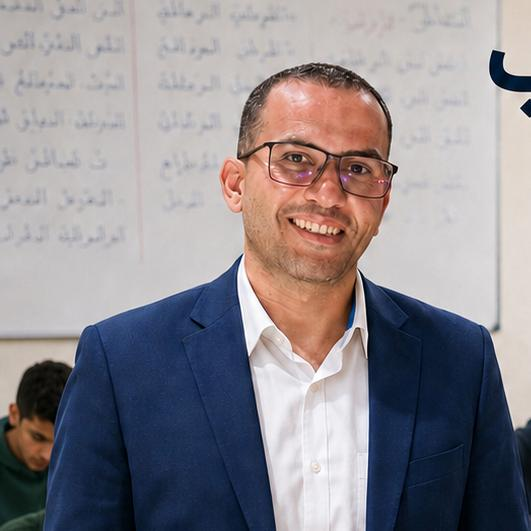

درس
لعبة
شريف الديب
الصَّفُّ السَّادِسُ الابْتِدَائِيُّ - الوحدة الثالثة: العلم والخيال والمستقبل
من وراء الكاميرا؟
الدرس الثاني: القراءة
كان وأخواتها وأنواع خبرها • الهمزة المتوسطة على الواو
رجوع
عنوان اللعبة
1 / 20
إجابة صحيحة!